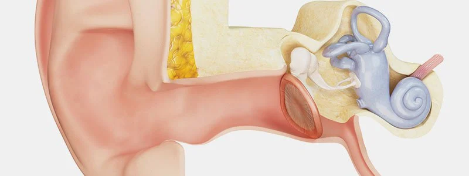

Tinnitus

CAUSES
Although the exact cause of tinnitus is unknown, the most common identifiable causes of tinnitus include:
- Hearing loss
-
Exposure to loud noises
-
Head injury
-
Medication side effects
-
High or low blood pressure
-
Wax buildup in the ear canal
-
Fluid buildup behind the eardrum
-
Problems of the heart, blood vessels, neck, jaw or teeth
TREATMENTS
Treatment options for tinnitus include:
-
Hearing aids. Many people who have tinnitus also have hearing loss. Hearing aids may help provide relief from tinnitus by making sounds louder and the tinnitus less noticeable. This is done by increasing the volume of the soft environment sounds (such as refrigerator noise, washing machine sounds, lawn mowers outside) while increasing soft speech. Hearing aids not only help with tinnitus, they also improve communication.
-
Sound generators. These adjustable ear-level devices produce a broadband sound (pleasant shower-like sound) that is delivered directly to the ear. These devices help people pay less attention to their tinnitus by masking it with another sound from the device.
Combination instruments. A hearing aid and sound generator can be housed in a single unit. These units are best for people who need hearing aids and may benefit from the use of additional sounds from the sound generators.
-
Environmental enrichment devices. A variety of simple-to-use devices can be used to generate background sound in order to decrease the perception of tinnitus. These include tabletop sound machines that can generate different types of sounds (for example, rain, wind and waterfalls), CD/mp3 recordings of music and/or nature/environmental sounds. There are a variety of apps specifically created for tinnitus relief that can be used with smartphones or tablets.
-
Relaxation techniques. Many people who have tinnitus find that it becomes more bothersome when they are under stress. Learning techniques to increase relaxation and ease stress can help people better deal with the frustrations of tinnitus. This can be achieved through meditation or mindfulness therapy.
-
Counseling options. Cognitive behavioral therapy (CBT) or acceptance and commitment therapy (ACT) with a psychologist can help people learn ways to limit the attention given to tinnitus and also help them better manage the stress and anxiety caused by the condition.
-
Other options. Some tinnitus is produced by stress on the jaw and neck muscle or temporomandibular disorder (TMD). A dentist may be of value in helping to control dental issues, such teeth clenching and grinding, which are associated with tinnitus. An examination by a physical therapist may identify problems with the movement of the head, neck and jaw that can contribute to tinnitus. Follow-up physical therapy can help restore the proper movement of the neck and jaw and improve posture, which may reduce the severity of tinnitus.